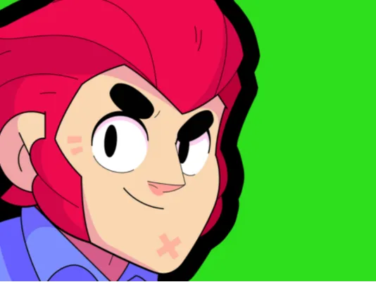

Brawl Stars es un popular videojuego movil multijugador de arena de batalla (MOBA) y disparos, creado por Supercell. Los jugadores compiten en equipos de tres (o en solitario) utilizando personajes unicos llamados "Brawlers", cada uno con habilidades especiales, en partidas rapidas de 3 contra 3 con diversos modos de juego estrategicos.
Objetivos del juego: Los modos incluyen "Atrapagemas"
(conseguir 10 cristales), "Supervivencia" (battle royale)
y "Atraco" (destruir la caja fuerte enemiga), entre otros.

Es el mas cabron por que lo uso yo.